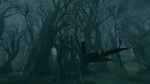
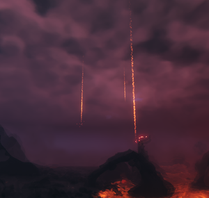
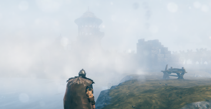
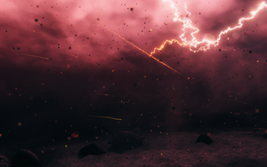
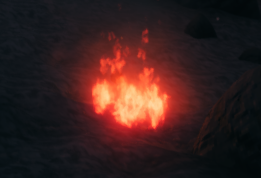

环境
本站支持中英文站内搜索。带 ↗ 的链接指向外部网站；各页来源版本见页脚。
英灵神殿中的环境会随昼夜循环、天气、生态区和事件不断变化。




白天 与夜间循环
英灵神殿白昼长21分钟，夜晚9分钟，完整循环30分钟。现实每1分钟15秒，相当于英灵神殿的一天内1小时。
白天
出现新一天提示，例如第12天时，一天开始。也有音乐提示，但弹窗更明显。对应24小时制时间为3:36。
此时天空开始变亮，正式白昼为6am至6pm。晴天可看见日月，影子随其位置变化。环境光颜色、雾的密度和颜色也改变。
部分生态区永久昏暗，参阅下方。
夜 间
户外出现“你觉得冷”提示时夜晚开始；穿抗寒护甲或具有抗霜蜜酒效果时不会显示。也有音乐提示，对应24小时制20:24。
各生态区敌对生物夜间生成更频繁。此外，鬼魅、芬里等生物，或狼、壁虱后等更高星级变体，仅夜间生成。白天卸载后会消失。
临近黄昏，尤其黎明，北境平原很可能有浓雾限制视野，但不限这些时段。
睡眠
在床铺、龙床或灰烬之木床榻睡觉可跳过夜晚，玩家总在新一天开始前不久醒来。
天气
风
风向和风力定期变化。小地图左下箭头显示风向，界面不显示风力，但可听见；强风会产生风线和飞叶。风力范围0.05至1，最强风是最弱风的20倍。
多人游戏中，风的控制台命令不会改变其他玩家风向。
逆风时，展开船帆无法前进，只能以最低速度缓慢划行。冰霜龙母能力在操舵航行时改变风向，但不改变风力。
雨水
雨天，未在屋顶下的玩家和物体获得湿。屋顶位于对象中心正上方100米内即可挡雨。这与庇护效果不同：庇护要求各方向大致封闭，雨只需由正上方不漏雨的对象阻挡。
暴露于雨或静水的建筑和物体，每分钟损失生命值的1/20，但风化不会降至一半以下。受损越多，外观越破旧。
雾


无尽之海或北境平原等多个生态区可能起雾，大幅限制视野，100米外对象几乎看不见，也显著降低风车效率。
余烬雨




余烬雨是灰烬之地独有天气，余烬定期落在玩家周围60米内，为落点建筑施加火焰，并有32.1%概率使地面燃烧30秒。
护盾发生器可保护玩家免受落下余烬影响，数量取决于天气：
| 天气 | 生成间隔 | 生成概率 | 数目 | 每分钟平均 |
|---|---|---|---|---|
| 灰烬雨 | 20s | 40% | 1-2 | 1.8 |
| 余烬雨 | 6s | 70% | 1-13 | 49 |
| 雷暴 | 1s | 60% | 1-2 | 54 |
温度
夜间在户外，远离火焰，且未通过装备或抗霜蜜酒获得冰霜抗性，会导致寒冷效果。
无论昼夜，凛冽雪山和极北之地始终冻僵。灰烬之地始终温暖，包括周围沸腾海洋。
灰烬之地有独立高温机制。沸腾海洋损伤除灰烬长船外的船只，玩家浸没28秒后会被活活煮死。即使短暂站在熔岩上，也会受到巨大伤害。
各生物群系的天气效果
天气采用以已过游戏时间为种子的确定性伪随机生成器，因此所有世界的天气变化相同，但天气序列没有固定模式或重复。
下表列出各生态区特定天气的概率。注意，迷雾之地没有雾天天气，因为其永久迷雾由其他效果创建。
| 生物群系 | 天气 | 机会 | 最小风力 | 最大风力 |
|---|---|---|---|---|
| 青青草原 | clear | 86% | 0.1 | 0.6 |
| 雾 | 3% | 0.1 | 0.3 | |
| 小雨 | 3% | 0.1 | 0.6 | |
| 雨水 | 3% | 0.5 | 1 | |
| 雷暴 | 3% | 0.8 | 1 | |
| 黑暗林山 | clear | 87% | 0.1 | 0.6 |
| 雾 | 4% | 0.1 | 0.6 | |
| 雨水 | 4% | 0.5 | 1 | |
| 雷暴 | 4% | 0.8 | 1 | |
| 无尽之海 | clear | 71% | 0.1 | 0.6 |
| 雾 | 7% | 0.1 | 0.3 | |
| 小雨 | 7% | 0.1 | 0.6 | |
| 雨水 | 7% | 0.5 | 1 | |
| 雷暴 | 7% | 0.8 | 1 | |
| 幽暗沼泽 | 雨水 | 100% | 0.1 | 0.3 |
| 凛冽雪山 | 下雪时 | 83% | 0.1 | 0.6 |
| 暴风雪 | 17% | 1 | 1 | |
| 北境平原 | clear | 71% | 0.4 | 0.8 |
| 雾 | 14% | 0.1 | 0.3 | |
| 小雨 | 14% | 0.1 | 0.6 | |
| 迷雾之地 | clear | 88% | 0.05 | 0.2 |
| 雨水 | 6% | 0.05 | 0.5 | |
| 雷暴 | 6% | 0.5 | 1 | |
| 灰烬之地 | 灰烬雨 | 81% | 0.1 | 0.5 |
| 余烬雨 | 11% | 0.7 | 0.75 | |
| 雾 | 5% | 0.1 | 0.5 | |
| 雷暴 | 3% | 1 | 1 | |
| 灰烬之地 无尽之海 | 雷暴 | 100% | 0.8 | 1 |
| 极北之地 | clear | 40% | 0.2 | 0.6 |
| 下雪时 | 40% | 0.3 | 0.6 | |
| 暴风雪 | 20% | 1 | 1 |
环境效果
生态区效果将天气和其他环境效果与各生态区关联，部分地下城或袭击也使用这些效果。
启用作弊后，可用调试控制台env命令，后接空格和标签，设置各天气效果。标签在每种天气条件后的括号列出。
这些天气效果会影响无尽之海生态区的波浪大小和频率。
部分生态区进入时强制施加天气效果，并在玩家留在其中期间持续：
其他生态区有间歇变化的特定天气：
- 凛冽雪山 降雪（env Snow）
- 凛冽雪山 暴风雪（env SnowStorm）
- 黑暗林山 浓雾（DeepForest Mist）
- 北境平原 浓雾（env Misty）
- 无尽之海 浓雾（env Misty）
每位首领还会强制触发各自独有的天气效果：
- 赤血灵鹿的雷暴（env Eikthyr）
- 古树长老的薄雾（env GDKing）
- 邪骨恶灵的暴雨（env Bonemass）
- 冰霜龙母的旋涡（env Moder）
- 亚格鲁斯的魔法暴风雪（env GoblinKing）
- 青焰龙王的极光（env Fader）
如前所述，部分额外天气效果用于控制地下城氛围，例如env Crypt、env SunkenCrypt。
一种特殊天气看似雷暴，但天空中有存在乘两只野兽拉的车横穿，并射出弧形闪电。通常认为是索尔，但仔细观察，模型和纹理尚未完成，标签为env nofogts。
用传送门在生态区间移动会混合环境效果，例如从雪山传送到青青草原后，青青草原下雪。
| 攻略 | |
|---|---|
| 玩家 | |
| 战斗 | |
| 生成 | |
| 建材 | |
| 界面 | |
| 世界 | |
| 杂项 | |
| 开发 | |
The environment in Valheim changes constantly, through a day and night cycle, weather, biome and event effects.
Day and night cycle
Valheim days are 21 minutes long, with nights being 9 minutes long. A full loop is 30 minutes. Each 1 minute and 15 seconds in real time is equivalent to 1 hour in a Valheim day.
Day
The day starts when there is a popup announcing the new day (eg. Day 12). There is also a musical cue that can be heard, though the popup is much more noticeable. The 24-hour equivalent is 3:36.
The sky begins to lighten at that point, and daytime proper runs from 6am to 6pm. The sun and moon can be seen under a clear sky, and the direction of shadows will follow their position. The color of ambient lighting, and the density and color of fog, also change.
Some biomes are permanently darkened, see below.
Night
The night starts when the 'You feel cold' announcement pops up when standing outside (this will not appear if the player is wearing cold-resistant armor or is under the effect of a Frost Resistance Mead). There is also a musical cue that can be heard. The 24-hour equivalent is 20:24.
Each biome's hostile mobs spawn more frequently at night. Additionally, certain mobs, such as Wraiths and Fenrings, or higher-star variants of some mobs, such as Wolves or Gjalls, only spawn at night. They despawn once they unload during daytime.
There is a high chance that a thick fog will limit visibility in the Plains towards dusk and especially dawn, though it is not limited to these time frames only.
Sleeping
Sleeping in a Bed, Dragon Bed or Ashwood Bed can be used to skip the night. The player always wakes up shortly before a new day starts.
Weather
Wind
The direction and force of the wind changes periodically. The direction is shown as an arrow in the lower-left corner of the minimap. The intensity is not shown in the interface, but can be heard, and stronger winds will produce gust lines and leaves blowing through the world. The wind intensity ranges from 0.05 to 1, so the strongest possible wind is 20 times stronger than the weakest.
Wind affects Sailing, Windmill processing speed and Wind run effect.
The wind console command doesn't change wind direction for other players in multiplayer
If the wind is blowing against the player's intended direction of travel, it becomes impossible to move a boat forward with the sail unfurled, and it can only crawl forward at the lowest speed. Moder's power changes the wind direction while sailing (while steering the ship), but not wind intensity.
Rain
During rainy weather, players and objects not under a Roof become wet. A roof will protect from rain if it is within 100 meters directly above the center of the object in question. This is not the same as the Shelter Effect—shelter checks that a player is mostly enclosed in all directions, whereas rain can only be deterred by a non-"leaky" object directly above.
Built structures and objects exposed to rain (or still water) will be damaged for 1/20 of their health per minute, but cannot be reduced below half of their health by weathering. They may appear increasingly worn as their damage increases.
Fog
Fog can be experienced in several biomes such as the Ocean or the Plains. It severely limits visibility, with objects over 100m away being nearly impossible to see. Fog will significantly decrease the efficiency of Windmills.
Cinder rain
Cinder rain is a weather condition exclusive to the Ashlands. Cinders regularly fall from the sky around the player (60 meters range). Cinders set fire to the structures they fall on, they also have a 32.1% chance to set fire on the ground for 30 seconds.
The Shield Generator can be used to protect from falling cinder. The amount of cinder depends on the weather:
| Weather | Spawn interval | Spawn chance | Number | Average per minute |
|---|---|---|---|---|
| Ash Rain | 20s | 40% | 1-2 | 1.8 |
| Cinder Rain | 6s | 70% | 1-13 | 49 |
| Thunderstorm | 1s | 60% | 1-2 | 54 |
Temperature
At night, being outside and not near a fire without resistance to frost (via equipment or a Frost Resistance Mead) causes the cold effect.
Mountains and the Deep North are freezing regardless of the time of day. The Ashlands are warm at all times, including at the boiling ocean surrounding the landmass.
The Ashlands have a separate heat mechanic. The boiling ocean damages boats other than the Drakkar, and causes the player to cook themselves alive after being submerged for 28 seconds. Lava deals massive damage if stood on even briefly.
Weather effects by biome
Weather uses a deterministic pseudo-random number generator seeded by the elapsed game time. As a result, the weather evolves in the same way in all worlds, but there is no pattern or repetition in the weather sequence.
The probability of a particular type of weather occurring in a biome is listed below. Note that the Mistlands does not have "foggy" weather, as its permanent mist is created using other effects.
| Biome | Weather | Chance | Wind min | Wind max |
|---|---|---|---|---|
| Meadows | Clear | 86% | 0.1 | 0.6 |
| Fog | 3% | 0.1 | 0.3 | |
| Light rain | 3% | 0.1 | 0.6 | |
| Rain | 3% | 0.5 | 1 | |
| Thunderstorm | 3% | 0.8 | 1 | |
| Black Forest | Clear | 87% | 0.1 | 0.6 |
| Fog | 4% | 0.1 | 0.6 | |
| Rain | 4% | 0.5 | 1 | |
| Thunderstorm | 4% | 0.8 | 1 | |
| Ocean | Clear | 71% | 0.1 | 0.6 |
| Fog | 7% | 0.1 | 0.3 | |
| Light rain | 7% | 0.1 | 0.6 | |
| Rain | 7% | 0.5 | 1 | |
| Thunderstorm | 7% | 0.8 | 1 | |
| Swamp | Rain | 100% | 0.1 | 0.3 |
| Mountain | Snowing | 83% | 0.1 | 0.6 |
| Blizzard | 17% | 1 | 1 | |
| Plains | Clear | 71% | 0.4 | 0.8 |
| Fog | 14% | 0.1 | 0.3 | |
| Light rain | 14% | 0.1 | 0.6 | |
| Mistlands | Clear | 88% | 0.05 | 0.2 |
| Rain | 6% | 0.05 | 0.5 | |
| Thunderstorm | 6% | 0.5 | 1 | |
| Ashlands | Ash rain | 81% | 0.1 | 0.5 |
| Cinder rain | 11% | 0.7 | 0.75 | |
| Fog | 5% | 0.1 | 0.5 | |
| Thunderstorm | 3% | 1 | 1 | |
| Ashlands Ocean | Thunderstorm | 100% | 0.8 | 1 |
| Deep North | Clear | 40% | 0.2 | 0.6 |
| Snowing | 40% | 0.3 | 0.6 | |
| Blizzard | 20% | 1 | 1 |
Environment effects
Biome effects tie the weather and other environment effects to each biome. Additionally, some dungeons or raids utilize some of these effects.
Each weather effect can be set by using the 'env' (environment) debug console command if, followed by a space and then their tag. (The tag will be listed with each weather condition in parentheses). Cheats must be enabled to do this.
- Clear skies (env Clear)
- Light Rain (env LightRain)
- Rain (env Rain)
- Thunderstorm (env ThunderStorm)
These weather effects will influence the size and frequency of waves within the Ocean biome.
Some biomes force a weather effect upon entry, and are persistent as long as the player is in that biome:
Other biomes have specific weather with intermittent changes:
- Mountain Snow (env Snow)
- Mountain Blizzard (env SnowStorm)
- Black Forest Fog (DeepForest Mist)
- Plains Fog (env Misty)
- Ocean Fog (env Misty)
Each boss also forces their own unique weather effect:
- Eikthyr's Thunderstorm (env Eikthyr)
- The Elder's Haze (env GDKing)
- Bonemass's Downpour (env Bonemass)
- Moder's Vortex (env Moder)
- Yagluth's Magic Blizzard (env GoblinKing)
- Fader's Aurora (env Fader)
As mentioned earlier, there are some extra weather effects that are used to control the ambience of dungeons (env Crypt, env SunkenCrypt).
There is a very special weather effect that appears to be a thunderstorm, but what sets it apart is the being that can be seen crossing the sky, arcing bolts of lightning from a carriage drawn by two beasts. This being is assumed to be Thor, though upon close inspection, the model and textures are incomplete (env nofogts).
Traveling between biomes using a Portal causes the environment effects to blend, e.g. causing it to snow in Meadows after teleporting from a Mountain.
| Guides | |
|---|---|
| Player | Player • Health • Stamina • Eitr • Adrenaline • Death • Forsaken power • Skills • Status effects • Movement speed • Magic • Fishing • Riding • Sleeping • Emotes |
| Combat | |
| Spawning | |
| Building | |
| UI | |
| World | |
| Misc | |
| Development | |